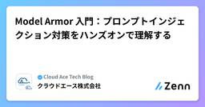
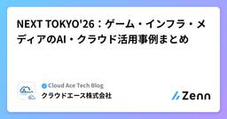
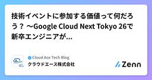

クラウドエース株式会社さんのフィード
https://zenn.dev/cloud_ace
クラウドエース株式会社 公式技術ブログです ｜仕事の依頼について▶ https://cloud-ace.jp/service/ ｜採用について（公式note）▶ https://cloud-ace-recruit.com/ ※本サイトに掲載されている商品またはサービスなどの名称
フィード

Model Armor 入門：プロンプトインジェクション対策をハンズオンで理解する
クラウドエース株式会社さんのフィード
1. はじめにこんにちは、クラウドエース第三開発部の小林です。生成 AI アプリの開発が急速に広まる一方で、プロンプトインジェクションをはじめとする「Large Language Model（以下、LLM） 固有のセキュリティリスク」への対策はまだまだ手探りな現場も多いと感じています。Google Cloud には Model Armor というセキュリティサービスがありますが、「名前は知っているけれど具体的な使い方はよく分からない」という方も多いのではないでしょうか。今回は Model Armor を触ってみたので、基本概念からハンズオンでの挙動検証までをまとめてみました！...
1日前

NEXT TOKYO'26：ゲーム・インフラ・メディアのAI・クラウド活用事例まとめ
クラウドエース株式会社さんのフィード
はじめにこんにちは、クラウドエース 事業推進本部 のエウゲニです。Google Cloud Next Tokyo 2026で参加したセッション内容の要点をまとめてみました。社内へのAI導入やクラウドインフラの最適化など、実務に直結する知見が共有されていたため、本記事にて共有します。 グリーとカプコンが語る、開発を劇的に変える Gemini 活用とエンタメの未来企業（登壇者）：株式会社グリー（大久保 将様）、株式会社カプコン（井上 真一様）本セッションでは、ゲーム開発の現場におけるAI活用のリアルな課題と展望が語られました。 AI導入の真の目的AIを導入する最大の理...
2日前

技術イベントに参加する価値って何だろう？ 〜Google Cloud Next Tokyo 26で新卒エンジニアが感じたこと〜 1
1
クラウドエース株式会社さんのフィード
1. はじめにこんにちは！クラウドエースの新米エンジニア、伊藤です。今回、私は国内でも多くの人が集まる大規模な技術イベント、Google Cloud Next Tokyo 26（以下、Next Tokyo）に参加しました。昨年は学生として会場の熱気に圧倒されながら参加していましたが、今年、新卒エンジニアとして再び参加して、ふと思ったことがあります。「なぜ、これほど多くの人が技術イベントに集まるのだろう？」もちろん、最新技術を学ぶことは大きな目的の一つです。しかし、実際に参加してみると、それだけではない価値があるように感じました。そんな思いから、本記事ではNext Toky...
5日前

【AIスライド作成】Gemini・python-pptxなどパワポ生成4ツールを同じ原稿・テンプレで比較！
クラウドエース株式会社さんのフィード
はじめにこんにちは。クラウドエース株式会社 第四開発部の河添です。近年、生成AIの進化によって、PowerPointスライドの作成も AI に任せられる時代になりました。今では AI でスライドを作る方法が数多くありますが、それぞれ実際に出力されるものは微妙に異なります。そこで、この記事では同じ原稿・同じテンプレを異なるツールに渡すと出力がどれだけ変わるのかを見比べることで、AI時代における効率的なスライド作成方法について考えていきたいと思います。 早見表まずは、今回比べる4手法を簡単に紹介します。Gemini Notebook（旧 NotebookLM）: 原稿（...
13日前
Professional Cloud Architect 認定試験範囲の解説 2026
クラウドエース株式会社さんのフィード
こんにちは。クラウドエース株式会社で Google Cloud 認定トレーナーをしている廣瀬 隆博です。最近はメタルライブの開催が多く、「あのバンドが来日？！」みたいなニュースを度々見かけるのですが、家庭持ちということもあってほとんど観に行けず、悔しい思いをしています。嬉しい悲鳴というやつでしょうか。界隈が盛り上がっていることは間違いなく良いことなので、いずれ子どもが手を離れるまで、この勢いが続けばいいなーと祈る日々ですね。そんな折、久々に Professional Cloud Architect を更新するタイミングがあったのですが、最近のリニューアルで AI 関連の設問が増えて...
14日前
GitHub から GitLab へ：Cloud Build 第 2 世代で CI/CD を移行した実践
クラウドエース株式会社さんのフィード
こんにちは、クラウドエース第三開発部の賀渝華です。中国・四川省の出身で、来日して 9 年になります。背景として、弊社では会社全体としてソース管理を GitHub から GitLab へ移行していく方針があります。その流れの中で、先日、担当している案件の Google Cloud プロジェクト群の継続的インテグレーション／継続的デリバリー（以下、CI/CD）を GitLab へ移す作業を担当することになりました。「リポジトリを移すだけでしょ？」と軽く考えていたのですが、いざ着手すると Cloud Build の世代差やトリガーの作り直し、既に開いていた Merge Request（以下...
23日前
【Google Cloud】特定のVMインスタンスだけSSH接続を限定許可するIAM設計
クラウドエース株式会社さんのフィード
はじめにこんにちは、クラウドエースの梶尾です。Google Cloud の運用設計を進める中で、特定の外部パートナーや運用担当者に、特定の VM インスタンスだけを触らせたいという要件が発生することがあります。他のインスタンスへの操作は一律で禁止したい、というケースです。ここで前提として知っておくべき Google Cloud の仕様があります。実は、コンソール上で特定の VM だけを表示し、他の VM の名前を非表示にするような「画面レベルでの絞り込み」はできません。プロジェクト内のすべての VM 一覧は、どうしても画面上に見えてしまいます。しかし、一覧は見せるものの...
1ヶ月前
AIコーディングエージェントを「チームの資産」にする3つの設計パターン
クラウドエース株式会社さんのフィード
こんにちは。クラウドエース株式会社 第一開発部の喜村です。日ごろの開発や運用で AIDD（ AI 駆動開発）を意識しながら業務を進める中で、ナレッジ共有の仕組みを考えてみました。 はじめにClaude Code や Cursor のようなAIコーディングエージェントは、日々の開発やインフラ運用でもう手放せない存在になりました。一方で、継続的なクライアントワークでAIエージェントを使い込んでいくと、ある共通の壁にぶつかります。「このエージェント、毎回ゼロから話を聞いている気がする」チケット対応で得た知見も、障害調査で得た勘所も、セッションが終わればそのエージェントの中には残りま...
1ヶ月前
Dataform の updatePartitionFilter で複数の動的日付フィルタを指定する
クラウドエース株式会社さんのフィード
こんにちは、クラウドエース株式会社第四開発部の渡辺です。Dataform で incremental テーブルを運用していると、「特定の日付範囲だけ再計算したい」という場面が出てきます。本記事では、updatePartitionFilter に 開始日・終了日のような複数の動的条件 を載せる方法を紹介します。 概要incremental テーブルの更新対象パーティションは、updatePartitionFilter で絞り込めます。期間を実行時に変えたい場合は dataform.projectConfig.vars を使い、条件が複数ある場合は JavaScript の式で ...
1ヶ月前
Chrome Enterprise PremiumとCrowdStrikeを連携させたときにハマったこと：ヘルパーアプリの必要性
クラウドエース株式会社さんのフィード
はじめにこんにちは、クラウドエース株式会社の小勝です。近年、リモートワークやクラウドサービスの利用が当たり前になる中、業務システムなどのWebリソースへアクセスする際に「アクセス元の身元を毎回検証する」というゼロトラストの仕組みが重要視されています。特に、「アクセス元の端末自体が本当に安全か」を動的に評価することは、現代のセキュリティにおいて欠かせない要素です。そのゼロトラスト構築の一環として、Chrome Enterprise PremiumとCrowdStrikeを連携させたアクセス制御の実装を行う機会がありました。しかしその中で、「Chrome Enterpriseでゼロ...
2ヶ月前
標準機能だけで実現！Google Cloud で許可外IPからのアクセスを検知・通知する方法
クラウドエース株式会社さんのフィード
はじめにこんにちは、クラウドエースの梶尾です。Google Cloud の運用保守を進める中で、「社内ネットワーク以外のIPアドレスからのアクセスを防ぎたい」という課題は避けて通れません。正直なところ、Google Workspace の有料ライセンス（Context-Aware Access）を契約して入り口でシャットアウトするのが一番手軽かつ確実な方法です。ただ、予算の都合で「ライセンス費用は出せないけれど、許可してないIPアドレスからのアクセスには即座に気づけるようにしたい」というケースは少なくありません。そこで今回は、追加費用ゼロ。Google Cloud 標準機...
2ヶ月前
【Looker 入門】BigQuery 一般公開データで学ぶ！最初のダッシュボードを作成するまでのチュートリアル
クラウドエース株式会社さんのフィード
はじめにこんにちは。クラウドエース株式会社 第一開発部の猪野です。データ活用が当たり前になった昨今、Google Cloud が提供するエンタープライズ向け BI プラットフォーム「Looker（ルッカー）」はご存知でしょうか？「Looker って名前は聞くけど、なんだか難しそう……」そんな Looker 初学者の方 に向けたチュートリアルです。 データポータルとの決定的な違いは「LookML」による一元管理機能が似ている「データポータル (旧 Looker Studio)」は直感的にグラフを作れる反面、各レポート内に計算ロジックを持たせるため、「A さんと B さんの...
2ヶ月前
フロントエンドの依存ライブラリの脆弱性対策に OSV-Scanner を導入してみた
クラウドエース株式会社さんのフィード
はじめにこんにちは、クラウドエースの第三開発部に所属している金子です。昨今、フロントエンド開発では依存ライブラリの脆弱性対策が重要になっています。そこで、担当しているプロジェクトの依存ライブラリの脆弱性対策として OSV-Scanner を導入しました。この記事では、OSV-Scanner を選んだ理由と、実際にプロジェクトに導入・運用する手順を紹介します。 対象読者フロントエンドの依存ライブラリの脆弱性対策に関心がある方GitHub Actions でセキュリティスキャンを実装したい方OSV-Scanner の導入や運用方法を知りたい方 なぜ今、対策が必要...
2ヶ月前
Agent Search — 1 つの GCS で登録者ごとの専用 RAG を実現する owner_id 設計
クラウドエース株式会社さんのフィード
こんにちは、クラウドエース株式会社のエンジニアの永井です。 0. はじめにユーザーごとに 専用 RAG を用意したい — こういう要件は AI アプリ開発でよく出てきます。素朴なやり方だと、新規ユーザーが登録するたびに GCS バケットと Data Store を 1 セット用意する ことになります。その場合、登録フローをコード化するか、管理者が都度 provisioning する必要があり、ユーザー増加に比例して運用負荷が増えます。本記事では、GCS 1 つ・Data Store 1 つを共有 し、登録者ごとに 検索結果だけを専用 RAG として分離する ために採用した st...
2ヶ月前
Google Cloud 認定資格対策：新卒未経験が半年で全冠達成した「AI 活用」勉強法とおすすめ取得順
クラウドエース株式会社さんのフィード
こんにちは、クラウドエース株式会社第三開発部の小勝です。現在（執筆時点では2026年6月16日）は新卒2年目です。昨年新卒1年目から約半年で Google Cloud Partner All Certification Holders を達成しました。25年度の All Certification Holders では Professional Security Operations Engineer（PSOE）が対象外でしたが、その後 PSOE も取得し、 Google Cloud 認定資格をすべて取得し終えました。この記事では、新卒 IT 未経験から短期間で全資格を取得した経験を...
2ヶ月前
Google ADK で多役エージェントの「議論」機能を実装した話
クラウドエース株式会社さんのフィード
はじめにこんにちは。クラウドエース株式会社の永井です。AI にプロフィールや専門性を与えて、あたかも別の人物のように振る舞わせる — いわゆる 擬似人格の AI を複数用意したとき、「これ、お互いに議論させたらどうなるんだろう？」と思いました。そこで、ユーザーが 2 体以上の参加者 AI を選び、1 つのお題について議論させる 機能を実装しました。単一の LLM に「みんなで議論して」と頼むのではなく、会議の役割分担（参加者・司会・ファシリテーター・チェッカー・スライド生成）をそのままソフトウェア構造に落とし込んでいます。（本プロダクトでは、こうした擬似人格の AI を社内で...
2ヶ月前
データポータルの会話分析とは？BigQuery でのデータエージェント構築手順
クラウドエース株式会社さんのフィード
はじめにこんにちは、クラウドエース株式会社 第四開発部の多賀です。データ分析の現場でよくある悩みが、「先週の〇〇のデータを出して」「このグラフを地域別で絞り込んで」といった、ビジネス側からの突発的なデータ抽出依頼です。これまでは、データ担当者がその都度 SQL を書いたりダッシュボードを修正したりして対応する必要がありました。しかし、データポータルに「会話分析」機能が統合されたことで、SQL が書けないビジネスユーザー自身もチャットでデータと対話するだけで、欲しいインサイトやグラフを即座に引き出せるようになりました。なお、この機能はデータポータルだけでなく、BigQuery 上...
2ヶ月前
AI駆動開発でWAFログ解析を楽にやりたい — Cursor で Log Explorer のログ解析ツールを作ってみた
クラウドエース株式会社さんのフィード
こんにちは。クラウドエース株式会社 第一開発部の阿部です。Zenn 初投稿です。同じ第一開発部の喜村さんが公開した Cloud Armor の誤検知をクエリで炙り出してチューニングする を読んで、Log Explorer で AND NOT を積み重ねながら誤検知を洗い出す手法を実践しました。この手法は 見落としが起きにくく、優れた方法 だと感じています。ただ、規模が大きいログを手作業で回し続けるのは想像以上に大変で、「前処理だけでも自分用に楽にできないか」と考えました。そこで Cursor を相棒に、AI 駆動開発で前処理用の Web UI を作ってみた というのが本記事です。ツ...
2ヶ月前
「おそらく」で直さない。Connectivity TestsでCloud Runのパケットの証跡を辿る
クラウドエース株式会社さんのフィード
はじめにこんにちは、クラウドエースの梶尾です。Cloud Run から VPC 内部のリソース（Compute Engine や Cloud SQL など）にアクセスしたい。そんなとき、最近の新規構成では「Direct VPC Egress」を第一候補に考える方が多いと思います。ただ、Direct VPC Egress は Cloud Run のインスタンスごとに IP アドレスを消費します。そのため、「大規模にスケールアウトしたときに IP が枯渇しないかな……」と設計で悩むこともありますよね。IP アドレスの消費を抑えたいケースや、既存資産との兼ね合いもあると思います...
3ヶ月前
Compute Engine と Cloud Run を徹底比較！使い分けのポイントを解説
クラウドエース株式会社さんのフィード
はじめにこんにちは、クラウドエースの梶尾です。Google Cloud のコンピューティングサービスを検討するとき、必ずと言っていいほど選択肢として並ぶのが Compute Engine と Cloud Run です。よく「クラウドは柔軟だから、まずは手軽な方で始めて、あとで変えればいい」という言葉を耳にします。しかし、実務で言えば、開発途中のプラットフォーム変更は設計・運用・CI/CD パイプラインのすべてにおいて、手戻りを発生させます。最初の一歩を間違えると、その後の開発効率やコストに大きな差が出てしまうのが現実です。とりあえずで選んで後悔しないために。この記事では...
3ヶ月前